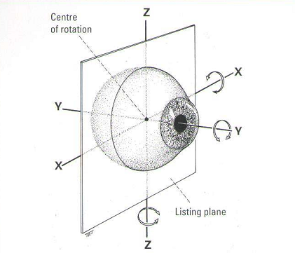

Axis
* Định nghĩa:
+ Trục
- Anteroposterior Axis: Trục trước sau là một đường thẳng xuyên qua cực trước, cực sau và trung tâm xoay của mắt. Nó vuông góc với đường ngang. Đồng nghĩa: Sagittal Axis, y-Axis

- Archormatic Axis: xem Achromatic
- Astigmatic Axis: Trục loạn thị
- Axis Notation: Ký hiệu trục, ký hiệu trục tiêu chuẩn (Standard Axis Notation)
- Cylinder Axis: 1. A line of zero curvature on a cylindrical surface. 2. That principal meridian of a planocylinder in which the power is zero.
- Fixation Axis: Đường thẳng nối từ vật nhìn đến trung tâm xoay của nhãn cầu.
- Geometrical Axis: Trục hình học là trục xuyên qua cực trước và sau của nhãn cầu. Nếu các bề mặt khúc xạ là đồng nhất nó sẽ trùng với trục quang học.
- Lens Axis: Trục thấu kính.
- Orbital Axis: Trục hốc mắt
- Optical Axis: Trục quang học.
- Pupillary Axis: Trục đồng tử là đường thẳng xuyên qua trung tâm đồng tử và đỉnh giác mạc
- Principal Axis: Trục chính.
- Sagittal Axis
- Transverse Axis: Trục ngang là một đường thẳng ngang xuyên qua trung tâm xoay của mắt và nằm trong mặt phẳng Listing. Đồng nghĩa: x-Axis
- Vertical Axis: Trục đứng là đường thẳng đứng xuyên qua trung tâm xoay của mắt. Đồng nghĩa: z - Axis
- Visual Axis: Trục thị giác